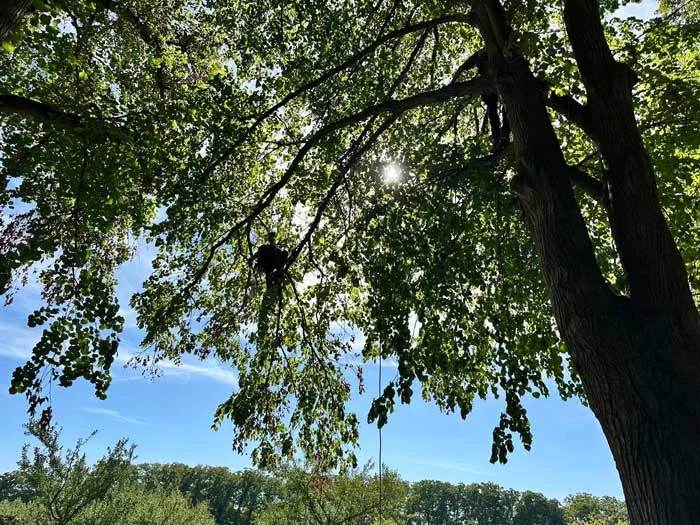
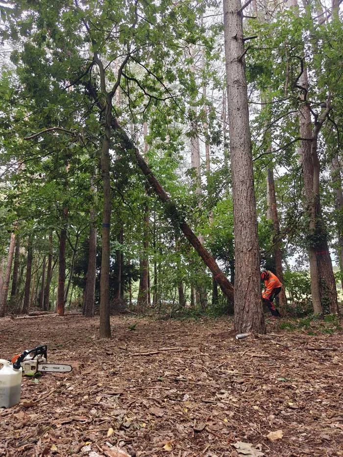
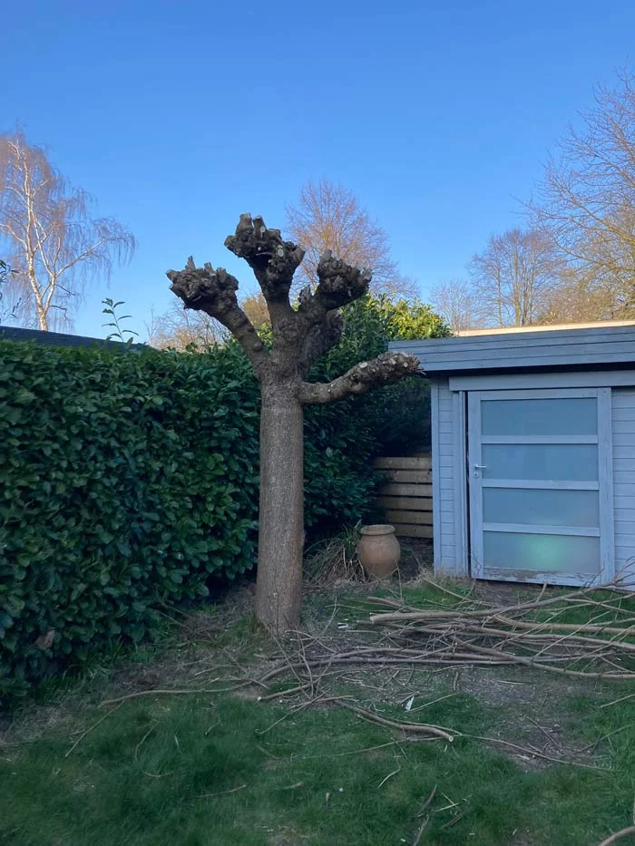
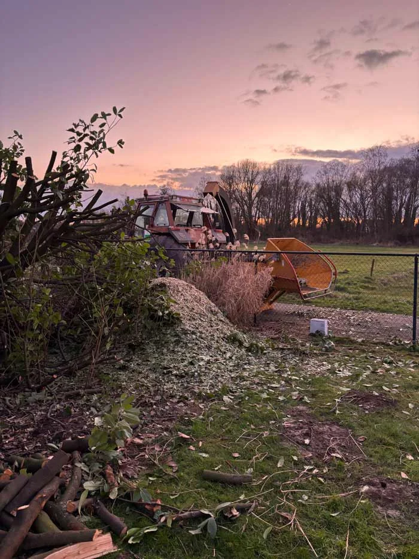
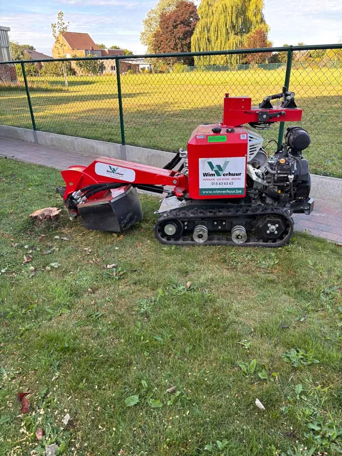
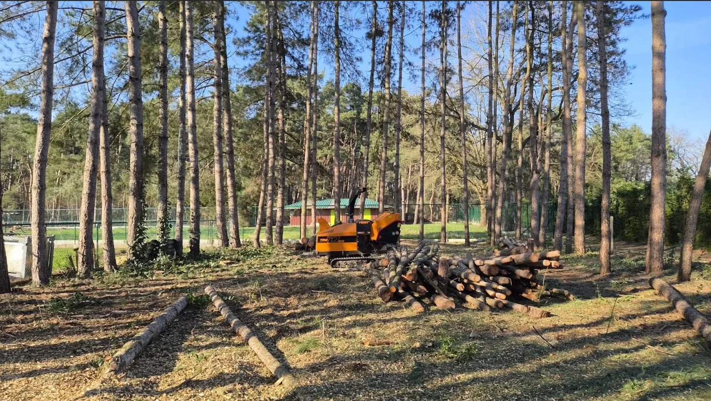

Boomwerken van A tot Z
Bomen snoeien, vellen en verzorgen vanuit Vremde, in de volledige provincie Antwerpen.

Snoeien met vakkennis
Bij het snoeien bekijken we de boomsoort, de kroon en de reden voor de ingreep. We stemmen de snoei af op de boom en zijn omgeving, bijvoorbeeld bij takken boven een tuinpad of dicht bij een woning.
Veilig vellen van bomen
Moet een boom verwijderd worden? De beschikbare ruimte, de toestand van de boom en de bereikbaarheid bepalen de werkwijze. Lees meer over bomen vellen, de voorbereiding en prijsfactoren.


Knotten van bomen
Knotten past bij bomen die daarvoor geschikt zijn en als knotboom beheerd worden. We bekijken de soort en de eerdere snoei voordat we de aanpak bepalen; knotten is geen standaardbehandeling voor elke boom.
Hakselen van takken en groenafval
Na snoei of velwerken blijft er vaak veel tak en groenafval over. Met onze krachtige hakselaar verwerken we dit snel en efficiënt. Het haksel kan desgewenst worden hergebruikt als mulchlaag.


Stronkenfrezen
Na het vellen van een boom blijft vaak een hinderlijke stronk achter. Met een stronkenfrees verkleinen we de stronk tot onder het maaiveld. De benodigde diepte en afwerking hangen af van wat je daarna met de plek wil doen. Bekijk stronkenfrezen en de gegevens voor een offerte.
Bosbouw
Voor grotere percelen helpen we met bos vellen en bouwgronden vrijmaken. We werken gecontroleerd, ruimen takken en stammen netjes op en verwerken groenafval waar mogelijk ter plaatse.

Boomverzorging: van beoordeling tot uitvoering
Een boom snoeien en een boom vellen zijn verschillende opdrachten. We bespreken eerst wat je wil bereiken: een boom behouden en verzorgen, of een boom verwijderen. De hoogte, toestand, beschikbare ruimte en obstakels zoals een woning of afsluiting bepalen de aanpak.
Op de pagina certificaten kan je de aanwezige opleidingsattesten bekijken. Onze foto’s van boomverzorging tonen het klimwerk en het gebruikte materiaal.
- Aanvraag: stuur de locatie, een beschrijving van de boom en de gewenste werken.
- Beoordeling: we bespreken bereikbaarheid, ruimte en de uitvoering.
- Offerte: we spreken af welke werkzaamheden en verwerking van takken en stammen inbegrepen zijn.
Vanuit Vremde, deelgemeente van Boechout, werken we in de volledige provincie Antwerpen. Bekijk ons werkgebied en alle gemeenten.
Wat bepaalt de prijs van boomwerken?
De boomhoogte, stamdiameter, kroon, staat van de boom en bereikbaarheid beïnvloeden de hoeveelheid werk. Ook nabijgelegen gebouwen, de verwerking van hout en snoeisel en eventueel frezen van de stronk tellen mee. Daarom maken we een offerte voor jouw concrete situatie in plaats van een standaardprijs per boom.
Veelgestelde vragen over boomwerken
Kan een boom behouden blijven in plaats van geveld te worden?
Dat hangt af van de toestand van de boom en de reden voor je aanvraag. Vermeld je doel, zodat we de passende ingreep kunnen bespreken. Snoeien en vellen zijn geen uitwisselbare oplossingen.
Is de stronk automatisch inbegrepen bij het vellen?
Stem dit vooraf af. Vellen verwijdert het bovengrondse deel van de boom; stronkenfrezen is een afzonderlijke bewerking die we in dezelfde aanvraag kunnen bespreken.
Welke informatie is nuttig voor een offerte?
Vermeld de gemeente, het aantal bomen, de geschatte hoogte en of een woning, weg of kabel dichtbij ligt. Beschrijf de doorgang naar de tuin en wat er met takken en stammen moet gebeuren.